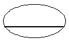

보석감정사(기능사) (2005-07-17 기출문제)
1과목: 보석학일반
1. 순금의 비율이 91.66% 인 장신구의 표시 문자는?
- 22K
- 20K
- 18K
- 14K
(정답률: 88%)

2. 다음 중 주로 캐보션으로 연마하는 보석은?
- 에메랄드
- 캐츠아이
- 진주
- 스피넬
(정답률: 83%)
3. 합성 청색 사파이어는 어떤 원소 때문에 색을 띄는가?
- Ni
- V
- Ti + Fe
- Ni + Cr + Fe
(정답률: 76%)
4. 다음 백금에 관한 설명 중 틀린 것은?
- 시중 보석상에서 백색금과 백금은 가치가 모두 같다.
- 백금의 주요산지는 남아프리카공화국, 러시아, 캐나다 등이다.
- 백금은 용융점이 1,777℃로 높고 내열성도 우수하다.
- 백금은 왕수에 녹는다.
(정답률: 87%)
5. 분산이 높은 돌을 커트하는 방법으로 이상적인 것은?
- 오팔
- 페어
- 마퀴스
- 라운드 브릴리언트
(정답률: 81%)
6. 금, 은, 구리 3원 합금시 동(銅)을 많이 섞으면 무슨 색상이 강한가?
- 녹색
- 황색
- 청색
- 적색
(정답률: 90%)
7. 다음 중 모조보석의 종류에 포함되지 않은 것은?
- 더블릿
- 트리플릿
- 포일백
- 베르누이
(정답률: 83%)
8. 다음 중 화성암이 아닌 것은?
- 페그마타이트
- 규암
- 킴벌라이트
- 화강암
(정답률: 49%)
9. 다음 중 접합석을 만드는 가장 큰 이유는?
- 값을 올리려고
- 크기나 색을 더욱 좋게 보이기 위해서
- 천연석과 구별하기 어려우므로
- 연마하기 수월하므로
(정답률: 87%)
10. 합성보석에 대한 설명 중 가장 올바른 것은?
- 제조한 보석으로 화학성분과 결정구조는 천연보석과 같다.
- 제조한 보석으로 화학성분은 같으나 결정구조는 천연보석과 다르다.
- 제조한 보석으로 화학성분은 다르나 결정구조는 천연보석과 같다.
- 제조한 보석으로 화학성분과 결정구조는 천연보석과 다르다.
(정답률: 88%)
11. 수정에 관한 설명 중 잘못된 것은?
- 화학성분은 이산화규소이다.
- 에머시스트 - 보라색 - 브라질
- 스모키 - 청색 - 스리랑카
- 타이거즈아이 - 샤토안시 효과 - 스리랑카
(정답률: 63%)
12. 은수저에 즉각적인 변색을 일으키는 음식물은?
- 콩나물
- 계란 노른자
- 김치
- 밥
(정답률: 89%)
13. 다음 중 천연 진주의 특징이 아닌 것은?
- 등고선 형태의 표면구조
- 오리엔트 효과
- 치아 검사시 거친 느낌
- 단굴절
(정답률: 67%)
14. 안달루사이트를 다른 각도에서 관찰시 두 개의 상이한 색을 볼 수 있는 성질을 무엇이라고 하는가?
- 광택성
- 다색성
- 인성
- 휘광성
(정답률: 94%)
15. 보석과 보석장식품들의 보관방법으로 가장 올바른 것은?
- 금강석 반지와 금강석 목걸이는 한 곳에 잘 싸두면 된다.
- 진주 목걸이는 착용 후 땀이나 먼지 등을 제거한 후 부드러운 천에 싸서 두면 된다.
- 에메랄드 제품은 초음파세척기를 사용해서 세척해도 무방하다.
- 오팔반지는 면수건에 잘 싸서 장농 속에 두면 된다.
(정답률: 86%)
2과목: 다이아몬드감정법
16. 십이면체 형태의 결정으로 산출되는 보석광물은?
- 토파즈
- 가닛
- 페리도트
- 크리소베릴
(정답률: 53%)
17. 보석의 특수효과와 보석명이 맞지 않는 것은?
- 알렉산드라이트 - 샤토안시(Chatoyancy)
- 사파이어 - 성채효과(asterism)
- 오팔 - 유색효과(play of color)
- 일장석 - 어벤추레센스(aventurescence)
(정답률: 55%)
18. 치아실험은 양식진주와 무엇을 분리하기 위해 사용되는가?
- 마베진주
- 모조진주
- 비와진주
- 천연진주
(정답률: 75%)
19. 다음 중 다이아몬드의 투명도 등급 감정을 위한 적절한 기구는?
- 편광기
- 굴절계
- 이색경
- 현미경
(정답률: 89%)
20. 암시아 조명(Darkfield illumination)을 사용하는 가정 큰 이유는?
- 집중이 잘 된다.
- 전기료가 절약된다.
- 블레미시가 잘 보인다.
- 인클루젼이 잘 보인다.
(정답률: 87%)
21. 다이아몬드의 피니쉬에서 미소대칭성에 해당되지 않는 것은?
- WG
- RG
- C/oc
- T/oc
(정답률: 73%)
22. 보석용 다이아몬드의 가장 일반적인 변형으로 8면체의 끝이 둥근 결정 형태는?
- 8면체(cotahedron)
- 12면체(dodecahedron)
- 24면체(tetra hexo hedron)
- 48면체(hexoctahedron)
(정답률: 35%)
23. 인클루젼(inclusions)의 특징을 나타낸 것은?
- 클리비지(cleavage)와 클라우드(cloud)
- 엑스트라 패싯(extra facets)과 내츄럴(natural)
- 어브레이젼(abrasion)
- 폴리시 마크(polish mark)
(정답률: 87%)
24. 다이아몬드 중량 추정시, 길이 : 폭의 비율이 필요한 형태는?
- 라운드 브릴리언트
- 마퀴즈 브릴리언트
- 오벌 브릴리언트
- 하트 브릴리언트
(정답률: 60%)
25. 다이아몬드의 결정 형태는?
- 사방정계
- 정방정계
- 등축정계
- 단사정계
(정답률: 94%)
26. 거들 두께에 대한 설명으로 틀린 것은?
- 어퍼거들과 로우어 거들이 만나는 부분 중 가장 두꺼운 부분의 두께를 측정한다.
- 거들의 원주 전체를 조사한다.
- 보통(Medium)두께의 거들은 확대 하에서 뚜렷한 선으로 보이고 육안으로는 가는 선으로 보인다.
- 거들의 두께는 최소, 최대와 평균치를 기록한다.
(정답률: 63%)
27. 다이아몬드의 가치평가 기준이 되는 4C 중에서 인위적으로 보석의 아름다움을 드러내는데 기여한 부분은?
- cut
- carat
- clarity
- color
(정답률: 90%)
28. 다음 작업들 중 거들(Girdle)의 윤곽이 만들어진 작업은?
- 브루팅(Bruting)
- 클리빙(Cleaving)
- 폴리싱(Polishing)
- 마킹(Marking)
(정답률: 79%)
29. 3그레인(grain)이라고 하면 대략 얼마만큼의 중량을 말하는가?
- 0.30 Ct
- 0.075 Ct
- 0.33 Ct
- 0.75 Ct
(정답률: 84%)
30. 플로리스(flawless)란 용어는 4C의 요소 중 어느 것과 연관이 있는가?
- 연마
- 색상
- 투명도
- 중량
(정답률: 69%)
3과목: 보석감별법
31. 10배의 배율로 보기 어려운 미소 인클루젼을 내포하고 있는 투명도의 등급은?
- VVS
- VS
- SI
- I
(정답률: 73%)
32. 다음 중 작도할 때의 색상으로 틀린 것은?
- 엑스트라 패싯은 검정색 실선으로 작도한다.
- 금속셋팅은 검정색 점선으로 작도한다.
- 커다란 칩과 캐비티는 적색과 녹색으로 작도한다.
- 레이져 드릴 홀과 노트는 녹색으로 작도한다.
(정답률: 75%)
33. 팬시 커트 다이아몬드(Fancy Cut Diamond)의 컬러 그레이딩(Color Grading)시 가장 올바른 관측법은?
- 팬시 커트(Fancy Cut)의 측면을 관찰한다.
- 팬시 커트(Fancy Cut)의 폭을 관찰한다.
- 각 방향의 색을 관찰하여 평균치를 구한다.
- 각 방향의 색을 관찰하여 모두 다를 때 대각선 방향을 관찰하여 색을 결정한다.
(정답률: 49%)
34. 다음 중 분광기를 이용한 검사법으로 틀린 것은?
- 투과법
- 외부 반사법
- 광학 투사법
- 내부 반사법
(정답률: 79%)
35. 투명한 돌에서 가장 많이 볼 수 있는 광택은?
- 금강광택
- 유리광택
- 금속광택
- 수지광택
(정답률: 84%)
36. 다음 중 천연호박 여부를 판별하기 위한 검사법 중 비파괴 검사법은?
- 열반응 테스트
- 포화염수법
- 화학검사
- 조흔검사
(정답률: 92%)
37. 루페로 루비의 원석을 관찰할 때. 볼 수 있는 성장마크는?
- 삼각형
- 사각형
- 줄무늬
- 팔각형
(정답률: 57%)
38. 다음 중 벌집모양의 표면조직을 나타내는 보석은?
- 아게이트
- 옵시디언
- 합성 오팔
- 상아
(정답률: 57%)
39. 다음 중 스펙트럼에서 어둡고 수평의 라인을 일으키는 원인은?
- 높은 형광성의 돌을 볼 때
- 슬릿에 있는 먼지나 불순물 때문에
- 돌의 패싯으로 부터의 반사에 의해서
- 돌을 통과하는 빛이 너무 많을 때
(정답률: 86%)
40. 열반응 시험에서. 태울 때 타는 냄새가 석탄 타는 냄새가 나는 것은?
- 호박
- 산호
- 경화고무
- 제트
(정답률: 88%)
41. 컬러 필터는 예전에는 어떻게 불리었는가?
- 에메랄드 필터
- 루비 필터
- 사파이어 필터
- 다이아몬드 필터
(정답률: 86%)
42. 특수한 외관을 가진 보석 중 일반적 표면 특징이 아닌 것은?
- 녹색을 띤 청색 - 녹색, 반점이나 거미집 같은 모양을 포함한 것은 터쿼이즈 이다.
- 십자 모양의 무늬를 갖는 것은 안달루사이트의 변종인 키에스톨라이트 이다.
- 적색의 줄무늬나 녹색 반점으로 된 것은 로도나이트 이다.
- 금속광택을 띄며 회색에서 흑색인 것은 헤마타이트 이다.
(정답률: 29%)
43. 컬러필터를 사용해서 보석을 보았을 때 일반적으로 나타나는 현상이 아닌 것은?
- 천연 에메랄드는 적색으로 보인다.
- 염색 녹색비취는 적색으로 보인다.
- 합성 에메랄드은 적색으로 보인다.
- 염색 녹색수정은 적색으로 보인다.
(정답률: 49%)
44. 비중의 단위는?
- cm3
- ct
- g/cm3
- 단위가 없다.
(정답률: 74%)
45. 다음 중 비중액의 변색을 막기 위해 비중액 안에 넣어두는 물질은?
- 납 조각
- 구리 조각
- 아연 조각
- 니켈 조각
(정답률: 97%)
4과목: 보석가공기법
46. 복굴절을 검사할 수 있는 기기가 아닌 것은?
- 편광기
- 굴절계
- 분광기
- 현미경
(정답률: 35%)
47. 돌의 비중 측정시 결과에 영향을 줄 수 있는 요소는?
- 내포물
- 굴절율
- 형광성
- 다색성
(정답률: 60%)
48. 다음 중 편광기 반응에서 DR(복굴절)이 아닌 유색석은?
- 루비
- 스피넬
- 투어멀린
- 쿼츠
(정답률: 63%)
49. 라피스 라줄리의 염색처리 여부 확인 방법이 옳은 것은?
- 중액 실험
- 비중 실험
- 염산 반응 실험
- 아세톤 실험
(정답률: 85%)
50. 다음 특수효과의 명칭과 약자가 맞는 것끼리 짝지어진 것은? (단, GIA)
- 샤토얀시 - CC
- 어벤츄레센스 - A
- 유색효과 - OP
- 오리엔트 - O
(정답률: 90%)
51. 편광기를 이용하여 특성이 다른 보석을 확인 할 수 있다. 다음 중에서 다른 특성을 갖고 있는 보석은?
- 루비
- 토파즈
- 페리도트
- 안달루사이트
(정답률: 34%)
52. 진주효과(orient)의 설명으로 틀린 것은?
- 프리즘 같은 신(sheen)으로 진주의 아름다움은 주로 이것에 의존된다.
- 조그마한 층상조직에서 생기는 빛의 간섭과 회절에서 이러한 효과가 나타난다.
- 빛의 회절은 가끔 깨어진 유리의 깨진 가장자리에서 보여지는 다채로운 색을 말한다.
- 순수한 스펙트럼 색만 생긴다.
(정답률: 60%)
53. 다음 중 팬시 컷(Fancy Cut)에 해당되지 않는 것은?
- 오벌 컷
- 싱글 컷
- 하트 컷
- 에메랄드 컷
(정답률: 87%)
54. 다음 중 캐보션 형태의 천연보석을 광택 내는데 많이 사용되며, 특히 비취의 광택제로 가장 적합한 것은?
- 산화제이철
- 산화크롬
- 산화세륨
- 실리콘이산화물
(정답률: 72%)
55. 천공작업 시 작은 다이아몬드 날의 드릴링 회전 속도로 가장 적합한 것은?
- 분당 약 500rpm ~ 1,000rpm
- 분당 약 1,000rpm ~ 2.000rpm
- 분당 약 2,500rpm ~ 4,000rpm
- 분당 약 4,500rpm ~ 5,000rpm
(정답률: 29%)
56. 텀블링 작업에 대한 설명 중 잘못된 것은?
- 어떠한 형태의 보석이든지 연마가 가능하다,
- 연마재:미디어:원석의 비율은 1:2:5로 넣는다.
- 연마물은 배럴의 1/2정도 넣어 낙차의 폭을 크게 한다.
- 합성세제를 섞은 물을 넣어 돌의 윤활작용을 돕는다.
(정답률: 49%)
57. 다음 중 난발 난물림에 대한 설명으로 보기 어려운 것은?
- 브릴리언트 컷에 적당하다.
- 고급 보석이나, 섬세한 디자인에 주로 사용한다.
- 어떤 형태의 보석이라도 물릴 수 있다.
- 보석을 물렸을 때 난발이 보이지 않아야 한다.
(정답률: 90%)
58. 다음 그림과 같은 단면을 갖는 연마형태의 명칭은?

- 역 캐보션
- 이중 캐보션
- 오목 캐보션
- 평 캐보션
(정답률: 76%)
59. 다이아몬드 컴파운드 제조방법 중 틀린 것은?
- 경도가 높은 보석인 경우 고운 메시를 사용한다.
- 벽개가 심한 보석은 거친 메시를 사용한다.
- 무색 투명한 보석은 고운 메시를 사용한다.
- 규격이 큰 경우에는 거친 메시를 사용하고 작은 경우에는 고운 메시를 사용한다.
(정답률: 76%)
60. 네크리스(necklace) 중에서 가장 작은 종류로 목의 지름과 비슷한 크기의 목걸이는?
- 네크피스(neckpiece)
- 쵸커(chocker)
- 펜던트(pendant)
- 펙터럴(pectoral)
(정답률: 94%)